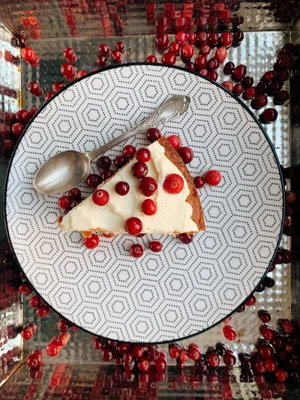

Vienā bļodā sajauc olas ar eļļu, balto un brūno cukuru, vaniļas cukuru, sāli, tad pievieno sarīvētus burkānus. Otrā bļodā samaisa miltus ar cepamo pulveri, kanēli un rīvētu muskatriekstu. Sausās sastāvdaļas ber bļodā pie slapjajām, pievieno ar nazi sasmalcinātus valriekstus un ar karoti samaisa. Mīklu izlīdzina ar cepamo papīru izklātā cepamformā , tad to liek līdz 175°C sakarsētā cepeškrāsnī un kūku gatavo 55 - 60 minūtes. Te sestais punkts ir vienlīdz svarīgs kā pirmais - kad kūka ir gatava, to izņem no cepeškrāsns un pilnībā atdzesē Pagatavo krēmsiera micīti - mikserbļodā liek mīksto sviestu, to ar mikseri puto kādu minūti, tad pievieno pūdercukuru un turpina putošanu vēl kādu minūti, tad pa tējkarotei ieputo krēmsieru, tad pievieno vaniļas cukuru. Ar gaisīgo krēmsiera masu pārklāj pilnībā atdzesēto burkānu kūku, to bagātīgi pārber ar dzērvenēm un kūka gatava.